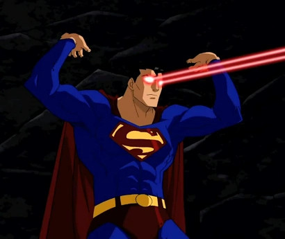
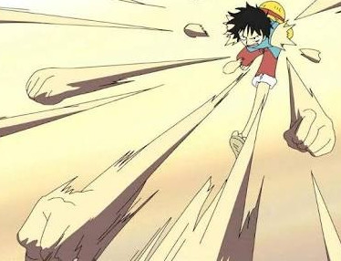

Fatos sobre o Stomatopada
Nome científico : Odontodactylus scyllarus
Classificação científica:
- Reino : Animalia
- Filo : Arthopoda
- Subfilo : Crustacea
- Classe : Malacostraca
- Subclasse : Hoplocarida
- Ordem : Stomatopoda
- Reino : Animalia
- Filo : Arthopoda
- Subfilo : Crustacea
- Classe : Malacostraca
- Subclasse : Hoplocarida
- Ordem : Stomatopoda
A lagosta é nossa!
Estomatrópodes podem ser encontrados em toda a costa brasileira! Mas cuidado, elas sabem se defender! Por isso não devem ser tocadas por humanos.
Super visão
Esses animais possuem o mais complexo sistema de visão de cores do mundo animal, pois enxergam 12 cores primárias, correspondentes aos 12 pigmentos distintos presentes em sua retina.
Lagosta Boxeadora
Alguns exemplares de Stomatopoda desferem um dos mais rápidos e violentos golpes do reino animal, um soco que pode apresentar a velocidade de um tiro calibre .22 (equivalente a 720 km/h) e com uma força capaz de esmagar conchas, carapaças de carangueijos e até quebrar vidros reforçados de aquários!
{kind=link}